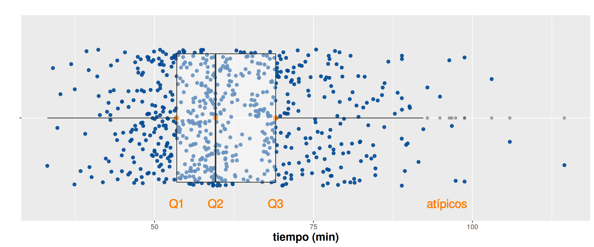

Visualización de variables cuantitativas
Métodos y Simulación Estadística
Variables cuantitativas
En el caso de las variables numéricas en escala de intervalo o de razón requieren un tipo de gráficas que permita visualizar sus principales características : centro, dispersión y forma.
Empezaremos con el diagrama de tallos y hojas, que aunque no es un gráfico y corresponde a un ordenamiento de los datos, permite visualizar de una forma rápida su forma. También permite ubicar el valor mínimo y el máximo.
Diagrama de tallos y hojas
Diagrama de tallos y hojas para el tiempo empleado por las atletas de la categoria Veteranas B
# seleccion de bases
dataFc4=subset(CarreraLuz22, (CarreraLuz22$sex=="Mujer" & CarreraLuz22$categoria=="4. Veteranos B")) # dataset de mujeres
x=dataFc4$timerun/60
stem(x) # Diagrama de tallos y hojas
The decimal point is 1 digit(s) to the right of the |
4 | 68
5 | 2234
5 | 6888899
6 | 01233334
6 | 5555566666778899
7 | 00111334
7 | 5667788
8 | 0001112333334
8 | 57899
9 | 04Este diagrama ordena los datos, permitiendo reconstruir la serie :
46, 48,52,52,53,54,....90,94
Histograma
Para la construcción del histograma se el rango de los datos en intervalos que pueden ser de igual o diferente tamaño, recomendándose que tenga un número de divisiones apropiado ( 7 a 15) que permita resumir los datos.
Aparentemente se puede semejar con un diagrama de barras, pues los rectángulos que lo conforman representan frecuencias, indicando que rectángulos más altos están indicando una mayor frecuencia de datos en su intervalo.
Este tipo de gráficos permite visualizar además de la forma de los datos, su rango.
library(paqueteMETODOS)
data("CarreraLuz22")
# seleccion de bases
dataFc4=subset(CarreraLuz22, (CarreraLuz22$sex=="Mujer" & CarreraLuz22$categoria=="4. Veteranos B")) # dataset de mujeres
x=dataFc4$timerun/60
hist(x,
breaks = 6,
las=1,
main = "Distribución de los tiempos mujeres Veteranas B",
xlab="tiempo (min)",
ylab = "frecuencia",
col ="#ee964b")Retos
Explora el código oculto
library(paqueteMETODOS)
library(ggplot2)
data("CarreraLuz22")
# Selección de bases
dataFc4 <- subset(CarreraLuz22, (CarreraLuz22$sex == "Mujer" & CarreraLuz22$categoria == "4. Veteranos B"))
# Crear el histograma con ggplot2
p = ggplot(dataFc4, aes(x = timerun/60)) +
geom_histogram(bins = 6, fill = "#ee964b", color = "white", alpha = 0.7) +
labs(title = "Distribución de los tiempos mujeres Veteranas B",
x = "Tiempo (min)",
y = "Frecuencia") +
theme_minimal()
ggplotly(p)Diagrama de densidad
Este diagrama permite visualizar la forma de los datos, su rango y en que parte se concentra la mayoría de los datos. Es útil para establecer comparaciones con modelos de probabilidad teóricos como la distribución normal, uniforme, ji-cuadrado, ….
par(mar = c(5, 4, 4, 1)+0.5) # margenes de la gráfica
plot(density(x), lwd=3, col="#0d3b66",
main = "Distribución del tiempo - mujeres categoría Veteranas B",
xlab="tiempo (min)",
ylab = "densidad", las=1,
cex.lab=1, # tamaño de etiqueta ejes
cex.axis=.8, # tamaño escalas de los ejes
cex.main=1, # tamaño del titulo
cex.sub=1) # tamaño del subtitulo)Diagrama de cajas
El diagrama de cajas permite visualizar el rango, los datos atípicos, los percentiles 25, 50 o mediana y 75, el valor mínimo y el máximo e intuir la forma de los datos. Además es útil al realizar la comparación de dos o mas variables numéricas.
boxplot(CarreraLuz22$timerun/60~CarreraLuz22$sex,
main = "Distribución del tiempo carrera La Luz 2022",
ylab="tiempo (min)",
xlab = "sexo", las=1,
col=c("#f4d35e","#ee964b"))
Retos
Explora el código oculto
library(paqueteMETODOS)
library(ggplot2)
library(plotly)
data("CarreraLuz22")
# Crear el boxplot con ggplot2
p =ggplot(CarreraLuz22, aes(x = sex, y = timerun/60, fill = sex)) +
geom_boxplot() +
labs(title = "Distribución del tiempo de carrera La Luz 2022",
x = "Sexo",
y = "Tiempo (min)") +
scale_fill_manual(values = c("#f4d35e", "#ee964b")) +
theme_minimal()
ggplotly(p)library(paqueteMETODOS)
library(ggplot2)
data("CarreraLuz22")
# Definir la paleta de 5 colores
paleta <- colorRampPalette(c("#001B48", "#97CADB"))(5)
# Crear el boxplot con ggplot2
p <- ggplot(CarreraLuz22, aes(x = sex, y = timerun/60, fill = categoria)) +
geom_boxplot() +
labs(title = "Distribución del tiempo de carrera La Luz 2022",
x = "Sexo",
y = "Tiempo (min)") +
scale_fill_manual(values = paleta) +
theme_minimal()
# Mostrar el gráfico ggplot2
pGráfico de series de tiempo
El gráfico de lineas es muy utilizado para representar series de tiempo, pudiendo visualizar sus principales características como son : tendencia, estacionalidad, ciclicidad y componentes aleatorios
#----------------------------------------------------------------------
library(tidyverse)
library(readr)
library(readr)
inflacion <- c(99.31, 88.3,66,66.7,20.5,8.9,2.3,7.3,8.8,1.72,8.47,18.75,9.21,20.23,6.74,6.32,6.93,32.41,8.39,14.84,12.92,7.46,6.48,8.26,6.83,13.91,13.86,
23.48,26.06,17.69,25.79,28.3,18.73,28.82,25.96,26.36,24.04,16.66,18.26,22.45,20.95,24,28.1,26.2,32.4,26.8,25.1,22.6,22.6,19.5,21.69,17.7,16.7,13.2,9.3,8.5,7.4,7.8,6.3,5.4,4.7,6.3,7.9,7.2,3.17,4,3.6,2.3,3.7,6.8,9,5.5,3.7,3.9,3.90,5.6,13.12,9.28)
y=ts(inflacion, star=c(1946), end=c(2023), frequency=1)
plot(y, type="l",
main="Inflación Colombia 1946 a 2023",
ylab="inflación acumulada anual (%)",
xlab = "meses", las=1,
col="#ee964b",
lwd = 4)
Retos
Explora el código oculto
library(tidyverse)
library(gganimate)
# Datos de inflación
inflacion <- c(99.31, 88.3,66,66.7,20.5,8.9,2.3,7.3,8.8,1.72,8.47,18.75,9.21,20.23,6.74,6.32,6.93,32.41,8.39,14.84,12.92,7.46,6.48,8.26,6.83,13.91,13.86,23.48,26.06,17.69,25.79,28.3,18.73,28.82,25.96,26.36,24.04,16.66,18.26,22.45,20.95,24,28.1,26.2,32.4,26.8,25.1,22.6,22.6,19.5,21.69,17.7,16.7,13.2,9.3,8.5,7.4,7.8,6.3,5.4,4.7,6.3,7.9,7.2,3.17,4,3.6,2.3,3.7,6.8,9,5.5,3.7,3.9,3.90,5.6,13.12,9.28)
year <- seq(as.Date("1946-12-31"), as.Date("2023-12-31"), by = "1 year")
# Crear un data frame con los datos
df <- data.frame(year, inflacion)
# Crear el gráfico animado con ggplot2 y gganimate
ggplot(df, aes(x=year, y=inflacion)) + geom_point() +
geom_line() + theme_minimal() +transition_reveal(year)Aunque en los retos previos se ha empleado el paquete gráfico
ggplot2, a continuación se hace una presentación de su
sintaxis
ggplot2

Gráficos con ggplot2

Data: capa de los datos
Aesthetics: capa estética (aes), definimos las variables a utilizar en el gráfico
Geometries: capa de geometrías, se define el tipo de gráfica a realizar
Facets: capa de facetas, permite detallar la gráfica por categorías
Statistics: capa de estadística, permite agregar modelos
Coordinates: capa de coordenadas, permite ajustar las escalas de los ejes
Theme: capas de características del gráfico que no dependen de los datos
- Se declara la data y las variables
library(readr)
library(ggplot2)
ggplot(CarreraLuz22, aes(y=edad , x=timerun/60)) # lienso con escalas 
- Se determina el tipo de gráfico a realizar con las variables declaradas
ggplot(CarreraLuz22, aes(y=edad , x=timerun/60))+
geom_point() # grafico de puntos
Para declarar el tipo de gráfico se emplean diferentes geometrías, en
este caso se utiliza geom_point()
| geo_point() | geom_bar() | geom_col() | stat_count() |
| geom_boxplot() | stat_boxplot() | geom_density() | stat_density() |
| geom_histogram() | geom_violin() |
ggplot(CarreraLuz22, aes(y=edad , x=timerun/60))+
geom_point()+
facet_wrap(~ sex) # separacion por sexo- Se declaran las capas y las estadística a emplear
ggplot(CarreraLuz22, aes(y=edad , x=timerun/60))+
facet_wrap(~ categoria)+
stat_smooth(method = "loess" , formula =y ~ x) # ajuste de modelo - Se definen capas de coordenadas para dar límites a los ejes
ggplot(CarreraLuz22, aes(y=edad , x=timerun/60))+
facet_wrap(~ categoria)+
stat_smooth(method = "loess" , formula =y ~ x)+
coord_cartesian(ylim = c(15, 80), xlim = c(35,180)) # ajuste de escalas ejes - Se adicionan titulos y etiquetes de los ejes
ggplot(CarreraLuz22, aes(y=edad , x=timerun/60))+
facet_wrap(~ categoria)+
stat_smooth(method = "loess" , formula =y ~ x)+
coord_cartesian(ylim = c(15, 80), xlim = c(35,180))+
labs(title = "Tiempos Carrera La Luz 2022", y= "Edad", x= "Tiempo (min)") # titulo y etiquetas Listo !!
Otros gráficos con ggplot2
# Selección del grupo - Hombres categoría Abierta
data("CarreraLuz22")
CarreraLuz22M = subset(CarreraLuz22, CarreraLuz22$sex=="Hombre")
CarreraLuz22_c2M = subset(CarreraLuz22M, CarreraLuz22M$categoria=="2. Abierta")
# Definición tamaño de letras
Theme1 = theme(axis.title.x = element_text(size = 16),
axis.text.x = element_text(size = 10),
axis.title.y = element_text(size = 16),
# axis.text.y = element_blank(),
axis.text = element_text( size = 10),
legend.title = element_text(size = 10),
legend.text = element_text(size = 10),
strip.text = element_text(size=10),
title =element_text(size=10, face='bold') )# tamaño letra por grupos
# Cálculo de los cuartiles
cuartiles1=data.frame(prob=c(0.25,0.5,0.75),
valor=quantile(CarreraLuz22_c2M$timerun, c(0.25,0.5,0.75),na.rm = TRUE)/60 )
q=cuartiles1$valor
# Construcción de la gráfica
p4=ggplot(CarreraLuz22_c2M, aes(x=timerun/60, y=" ")) +
geom_jitter(color="#034A94", size=2, alpha=0.9)+
scale_color_manual(values="#034A94") +
geom_point(data=cuartiles1, aes(x=valor), color="#FF7F00",size=3)+
geom_boxplot(alpha = 0.4)+
labs(title = " ", y= "", x= "tiempo (min)")+
geom_text(size=6,data = NULL, x = q[1], y = 0.5, label = "Q1",col="#FF7F00")+
geom_text(size=6,data = NULL, x = q[2], y = 0.5, label = "Q2",col="#FF7F00") +
geom_text(size=6,data = NULL, x = q[3], y = 0.5, label = "Q3",col="#FF7F00") +
geom_text(size=6,data = NULL, x = 96, y = 0.5, label = "atípicos",col="#FF7F00") +
Theme1
p4 